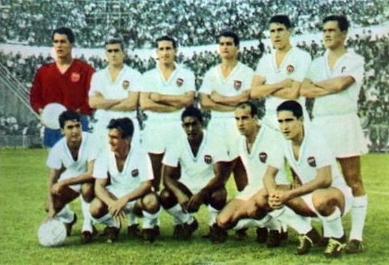

Curiosidades

1º Joaquín Sánchez Real Betis 25.000.00055
2º Pablo Aimar River Plate 21.500.00056
3º Éver Banega Boca Juniors 18.000.00057
4º Manuel Fernandes SL Benfica 18.000.00058
5º Stefano Fiore SS Lazio 17.000.000
6º Gonzalo De los Santos Málaga CF 15.000.00059
7º Nicolás Otamendi Fútbol Club Oporto 15.000.00060
8º Nicola Zigic Racing de Santander 14.000.00061
9º David Villa Real Zaragoza 12.000.00062
10º Rubén Baraja Atlético de Madrid 10.800.000